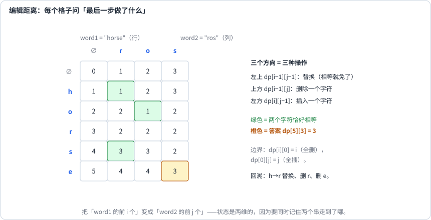
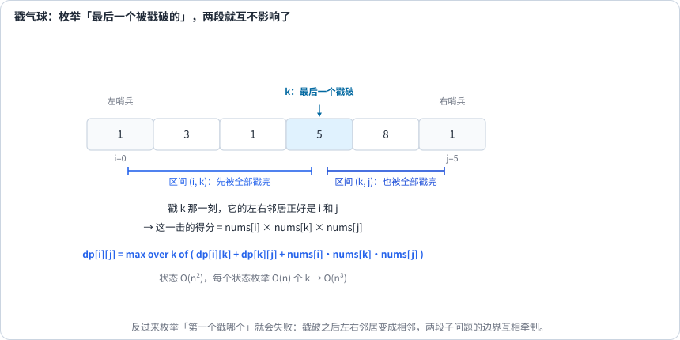

第 23 讲 · 区间与字符串 DP¶
阅读起点：第 20 讲：递归与记忆化；第 21 讲：双串前缀表；第 22 讲：初值含义。
首读范围：先读编辑距离，再读气球的最后一步；正则和算术括号化选读。
有两类题，第一眼看上去都不像 DP。
第一类：输入两个字符串 word1、word2，每次可以插入一个字符、删除一个字符或把一个字符替换为另一个，三种操作每次代价都是 1。返回把整个 word1 变成 word2 的最少操作数，例如 cat→cut 只需替换 a 为 u，答案为 1。难在三种操作要同时考虑。
第二类：输入一排带非负数值的气球 nums，必须逐个戳完。每戳一个，得分为“当前左邻居值 × 自己的值 × 当前右邻居值”，缺少的邻居按 1 处理；戳破后剩余左右邻居变成相邻。返回能够得到的最大总分。例如 [3,1] 先戳 1 得 3，再戳 3 得 3，总分 6；先戳 3 则总分只有 4。难在操作会改变问题的结构——这是它和别的 DP 最不一样的地方。
本讲先用编辑距离练习“两个前缀”的状态，再用戳气球练习“固定两端、处理内部”的区间状态。两种题都先明确小问题的含义，再说明如何从更小的问题组合答案；算术括号化放在后面的选读部分。
双串型状态：只看两个末尾¶

编辑距离的状态是最自然的一个：
先把操作画成对齐："cat"与"cut"按顺序对齐c/c、a/u、t/t，只有a/u需替换，代价1；若源串多一个字符，对应一列“源字符/空位”，需要删除；目标多一个则是“空位/目标字符”，需要插入。
所以这里分类的是最后一列怎样对齐，不是要求程序实际编辑时最后一秒必操作某个原始位置。末字符相等可直接配对，用较短两个前缀的答案；不等时，最后一列只能为删除、插入或替换，对应下面三个子问题。
| 最后一列是 | 前一部分的代价（操作还需加1） | 对应动作 |
|---|---|---|
删除 word1[i-1] |
dp[i-1][j] |
word1 少一个字符，仍要匹配 word2 的前 j 个 |
| 插入一个字符 | dp[i][j-1] |
插入的字符正好配上 word2 的最后一个，于是 j 前移 |
| 替换 | dp[i-1][j-1] |
前 i−1 配前 j−1，最后一个字符靠替换对上 |
def min_distance(word1, word2):
m, n = len(word1), len(word2)
dp = [[0] * (n + 1) for _ in range(m + 1)]
for i in range(m + 1):
dp[i][0] = i # 把前 i 个字符全删掉
for j in range(n + 1):
dp[0][j] = j # 从空串插出 j 个字符
for i in range(1, m + 1):
for j in range(1, n + 1):
if word1[i - 1] == word2[j - 1]:
dp[i][j] = dp[i - 1][j - 1]
else:
dp[i][j] = 1 + min(dp[i - 1][j], # 删除
dp[i][j - 1], # 插入
dp[i - 1][j - 1]) # 替换
return dp[m][n]
边界是 dp[i][0] = i、dp[0][j] = j，不是 0。 把 i 个字符变成空串要删 i 次，从空串变出 j 个字符要插 j 次。这两行写错，整张表都会错。
同一副骨架，换一个合并方式¶
下标仍用前缀长度，但把状态改成“按s中位置选取，拼出t前缀的方案数”，得到 Distinct Subsequences：s 中有多少个不同的子序列等于 t。
def num_distinct(s, t):
m, n = len(s), len(t)
dp = [[0] * (n + 1) for _ in range(m + 1)]
for i in range(m + 1):
dp[i][0] = 1 # 任何前缀都能构成空串，1 种方式
for i in range(1, m + 1):
for j in range(1, n + 1):
if s[i - 1] == t[j - 1]:
dp[i][j] = dp[i - 1][j - 1] + dp[i - 1][j] # 用 / 不用这个字符
else:
dp[i][j] = dp[i - 1][j]
return dp[m][n]
和编辑距离对照着看：下标都表示两个前缀，但各状态、边界与分支含义不同；求最小值用 min，求方案数用 +。这条对照记住之后，遇到双串 DP 就能一眼判断该用哪种运算。
计数中的“用当前字符”和“不用当前字符”是互不重叠的两组，才能相加。例如s="aa"、t="a"有2种，分别选下标0或1；它们拼出的文本相同，但选择的位置不同。不能把max机械换成+，不检查是否重复计数。
Interleaving String（交错字符串）输入三个字符串 s1、s2、s3，问能否把 s1、s2 的全部字符穿插成 s3，同时保持每个源串内部的顺序。返回布尔值。例如 s1="ab"、s2="cd"，可以组成 "acbd"，不能组成 "bacd"，因为后者颠倒了 a、b。不能跳过、增加或重复使用字符，所以总长度必须相等。
定义 dp[i][j] 为“s1 的前 i 个字符和 s2 的前 j 个字符，能否交错组成 s3 的前 i+j 个字符”。目标前缀的最后一个字符，要么来自 s1 的末尾，要么来自 s2 的末尾；只要其中一条路可行就可以，所以用 or 合并。
def is_interleave(s1, s2, s3):
m, n = len(s1), len(s2)
if m + n != len(s3):
return False
dp = [[False] * (n + 1) for _ in range(m + 1)]
dp[0][0] = True
for i in range(m + 1):
for j in range(n + 1):
k = i + j # s3 已经用掉的字符数
if i > 0 and s1[i - 1] == s3[k - 1]:
dp[i][j] = dp[i][j] or dp[i - 1][j]
if j > 0 and s2[j - 1] == s3[k - 1]:
dp[i][j] = dp[i][j] or dp[i][j - 1]
return dp[m][n]
漂亮的地方在于状态只需要两维：s3 中用掉的字符数恰好是 i + j，被 i、j 唯一确定，所以不必再开一维。"能从别的量推出来的东西，就不要塞进状态里"，这是设计 DP 状态时很实用的一条纪律。
正则匹配：把 * 的两种用法分开写¶
这里是LeetCode限定的正则语法：.匹配任意一个字符，x*匹配前面的字符x重复0次或多次；要求整个s匹配整个p，模式保证合法（前有元素）。它不是文件通配符中“独立匹配任意串”的语义。
接下来用 dp(i,j) 表示“源串剩余的 s[i:] 能否匹配模式剩余的 p[j:]”，i、j 是从 0 开始的下标。若 p[j] 后跟 *，有两种选择：完全不用这一组，或匹配一个源字符后仍保留这一组继续使用。
例如 s="aa"、p="a"：跳过a得到dp(0,2)，字符串还没用完所以失败；消耗一个a但保留模式得到dp(1,0)，还能再吃一个a，最后跳过a*成功。每次让i增加或j增加，递归状态总向结束推进；缓存最多(m+1)(n+1)个状态。
from functools import lru_cache
def is_match(s, p):
@lru_cache(maxsize=None)
def dp(i, j): # s[i:] 能否被 p[j:] 匹配
if j == len(p):
return i == len(s)
first_match = i < len(s) and p[j] in (s[i], '.')
if j + 1 < len(p) and p[j + 1] == '*':
# 用 * 匹配 0 次（跳过 p[j:j+2]），或者匹配 1 次（吃掉一个 s 字符）
return dp(i, j + 2) or (first_match and dp(i + 1, j))
return first_match and dp(i + 1, j + 1)
return dp(0, 0)
最容易写错的一处：* 分支的第二项是 dp(i + 1, j) 而不是 dp(i + 1, j + 2)——因为 x* 可以继续匹配更多字符，所以 j 停住不动。
区间型状态：枚举"最后一个"，而不是"第一个"¶

回到戳气球。如果顺着直觉去枚举"第一个戳哪个"，会立刻卡住：戳破它之后左右两边的气球变成相邻，两段子问题的边界互相依赖，没法分开求解。
把顺序倒过来想，问题就通了。
不要问"第一个戳哪个"，要问"最后一个戳哪个"。
先把状态补完整：dp[i][j] 表示保持边界i和j不戳破，只戳开区间(i,j)中全部气球时的最大收益。边界可能是真实气球，也可能是数组两端的虚拟1；不是每个子问题的边界都叫哨兵。
设 k 是区间 (i, j) 中最后一个被戳破的气球。那么在它被戳破之前，(i, k) 和 (k, j) 里的气球已经全部被戳完，而此时的 k 的左右邻居正好是 i 和 j（这两个从一开始就没被戳破，可能是哨兵）。于是这一步的得分可以精确写出，而且左右两段互不影响：
"枚举最后一步，让子问题互相独立"是区间 DP 的通用思想，也是它和双串型 DP 的分水岭。
下面约定气球值非负，与题目一致。内部没有气球时收益为 0，其他状态也可从 0 起取最大值；若允许负值且必须全戳，不能把非空区间初值设成 0。
def max_coins(nums):
nums = [1] + nums + [1] # 两端加哨兵，边界不用特判
n = len(nums)
dp = [[0] * n for _ in range(n)]
for length in range(2, n): # 按区间长度递增
for i in range(n - length):
j = i + length
for k in range(i + 1, j): # k 是"最后一个被戳破的"
dp[i][j] = max(dp[i][j],
dp[i][k] + dp[k][j] + nums[i] * nums[k] * nums[j])
return dp[0][n - 1]
哨兵的作用：题目说"越界视为 1"，加两个值为 1 的虚拟气球之后，真实的戳破全都发生在某个开区间内部，边界不需要任何特判。
若先想清递归依赖，记忆化版本更容易写对：
from functools import lru_cache
def max_coins_memo(nums):
nums = [1] + nums + [1]
@lru_cache(maxsize=None)
def dp(i, j):
if i + 1 == j: # 区间里没有气球
return 0
return max(dp(i, k) + dp(k, j) + nums[i] * nums[k] * nums[j]
for k in range(i + 1, j))
return dp(0, len(nums) - 1)
面试里先写记忆化、再改成递推，是最稳的顺序。
选读：相似的区间分割，不同的状态与代价¶
算术括号化输入一列整数和它们之间的 +、× 运算符，允许负数。要求保持数和运算符的原顺序，只通过加括号改变运算顺序，使最终结果最大。例如 7+4×3+5 可以变为 (7+4)×(3+5)=88。
用闭区间 [i,j] 表示第 i 到第 j 个数。最后一次运算在第 k 个运算符处，把它拆成 [i,k] 与 [k+1,j]，两边先算完再结合。
对每个区间存 low[i][j]、high[i][j]，分别是所有括号方案的最小、最大结果。单个数的两个值都等于它本身。枚举 i≤k<j，从左侧 low/high 与右侧 low/high 中各取一个，共四种组合，用第 k 个运算符计算，再更新整个区间的最小与最大值。
为什么不能只存最大值？乘法遇到两个负数时，两个更小的数可能给出更大的正积。例如左侧可能取 −3、−2，右侧也可能取 −3、−2，只取两侧最大会得到 4，最优却是 9。加法与乘法在给定区间端点上的极值都可从这四个组合得到，因此不需要保留中间每一种结果。最后答案取 high[0][n−1]，时间 O(n³)、空间 O(n²)。
下面两题也枚举区间内的分割位置，但具体操作的时序与边界定义不同：
- 多边形三角剖分：输入凸多边形按边界顺序排列的顶点正权值，用不相交的对角线把内部完全分成三角形，每个三角形代价为三个顶点值的乘积，求总和最小值。dp[i][j] 表示剖分顶点 i..j 构成的子多边形的最小代价；固定边 (i,j)，枚举第三个顶点 k，代价为 dp[i][k]+dp[k][j]+values[i]×values[k]×values[j]。不足三个顶点的代价为 0。
- 切棍子：输入棍长 L 和必须切开的坐标 cuts，每切一次支付被切这段棍子的长度，所有切点都必须完成，求最小总费用。先把 0、L 加入 cuts 并排序，dp[i][j] 表示切完坐标 cuts[i] 与 cuts[j] 之间所有切点的最小费用；枚举第一刀 k，费用为 cuts[j]−cuts[i]+dp[i][k]+dp[k][j]，相邻边界间无切点时为 0。
切棍子通常枚举第一刀：它先把区间切成两个物理独立的段，此次代价是整段长度；戳气球枚举最后一次，是为了保持边界固定。共通点是选择某个操作后子问题信息完整，不是“区间题都必须枚举最后一步”。
按区间长度递增（沿用气球的开区间）¶
dp[i][j] 只依赖更短的区间（dp[i][k]、dp[k][j]，其中 i < k < j），所以一种正确遍历顺序是按长度递增：
# n 是加了两端哨兵后的数组长度，length = j-i，是边界下标差。
for length in range(2, n):
for i in range(n - length):
j = i + length
for k in range(i + 1, j):
pass # 用已经算好的 dp[i][k] 与 dp[k][j]
length=1时i、j相邻，内部没有气球，收益是0，作为基例不需循环；length=2才有1个内部气球。图和代码始终用开区间，不再在中途切到含端点的区间长度。
这种顺序让所需子问题先计算。若画“子问题→使用它的大问题”，它是拓扑序；若箭头相反，则是逆拓扑序，与第20讲约定一致。
两段证明¶
双串型这里按“最优对齐的最后一列”分类。以编辑距离为例：若它删掉 word1 的末字符，前面必须已经把 word1[:m-1] 变成 word2[:n]，总代价 ≥ dp[m-1][n] + 1；若它插入 word2 的末字符，总代价 ≥ dp[m][n-1] + 1；若它把 word1 的末字符改成 word2 的末字符（本来就相等则不用改），总代价 ≥ dp[m-1][n-1] 或 dp[m-1][n-1] + 1。三类覆盖了全部可能，所以最优值不小于三者的最小值；反过来，三个候选都按对应操作可达，所以最优值不大于最小值。两边一夹，转移方程成立。∎
区间型的证明形状是"对最后一个动手的位置分类"。对区间长度归纳：设最优方案中最后被戳破的气球是 k。此刻 i 与 j 都活着，这一步得分为 nums[i]·nums[k]·nums[j]；而在此之前，(i, k) 与 (k, j) 各自被戳完，且互不影响（因为 k 一直活着，(i,k) 内的操作只受 i 与 k 约束）。由归纳假设它们的最优收益是 dp[i][k] 与 dp[k][j]，于是最优值等于对所有 k 取 dp[i][k] + dp[k][j] + nums[i]·nums[k]·nums[j] 的最大值。∎
复杂度与手工走一遍¶
| 题目 | 状态数 | 转移代价 | 时间 | 空间 |
|---|---|---|---|---|
| Edit Distance | m × n |
O(1) | O(mn) |
O(mn) → O(n) |
| Distinct Subsequences | m × n |
O(1) | O(mn) |
O(mn) → O(n) |
| Interleaving String | m × n |
O(1) | O(mn) |
O(mn) → O(n) |
| Regular Expression Matching | m × n |
O(1) | O(mn) |
O(mn) |
| Burst Balloons | n² 个区间 |
每个枚举 O(n) 个分割点 | O(n³) |
O(n²) |
| 算术括号化（含 min/max 两态） | n² × 2 |
O(n) × 4 |
O(n³) |
O(n²) |
这里 O(n³) 来自“有 O(n²) 个区间，每个枚举 O(n) 个分割点”。这是本讲几种区间 DP 的成本来源，不能据此断言所有区间 DP 都是三次方。
编辑距离走一遍：word1 = "horse"、word2 = "ros"。
| ∅ | r | o | s | |
|---|---|---|---|---|
| ∅ | 0 | 1 | 2 | 3 |
| h | 1 | 1 | 2 | 3 |
| o | 2 | 2 | 1 | 2 |
| r | 3 | 2 | 2 | 2 |
| s | 4 | 3 | 3 | 2 |
| e | 5 | 4 | 4 | 3 |
答案是 3。沿表格回推还能还原操作：h → r（替换）、删 r、删 e。
戳气球走一段：nums = [3, 1, 5, 8]，加哨兵后是 [1, 3, 1, 5, 8, 1]。长度 2 的区间（里面只有一个气球）：
dp[0][2] = 1×3×1 = 3 （只戳 3，左右边界值为 1 和 1；右边的 1 是原气球）
dp[1][3] = 3×1×5 = 15 （只戳 1）
dp[2][4] = 1×5×8 = 40 （只戳 5）
dp[3][5] = 5×8×1 = 40 （只戳 8）
长度 3 的区间 dp[0][3]（区间内是气球 3 和 1）：
最后戳 3：dp[0][1] + dp[1][3] + 1×3×5 = 0 + 15 + 15 = 30
最后戳 1：dp[0][2] + dp[2][3] + 1×1×5 = 3 + 0 + 5 = 8
→ 30
一路算上去，dp[0][5] = 167。这道题手算一遍，比读十遍题解更能确认自己是不是真的理解了"枚举最后一个"。
它在题库里长什么样¶
| 题目 | 类型 | 关键点 |
|---|---|---|
| Edit Distance | 双串 | 三种操作对应三个方向 |
| Distinct Subsequences | 双串计数 | 字符相同时相加 |
| Interleaving String | 双串 | k = i + j 省掉一维 |
| Regular Expression Matching | 双串 + 状态 | * 的两种用法 |
| Burst Balloons | 区间 DP | 枚举最后一个 + 哨兵 |
| Longest Palindromic Substring | 区间 DP（或中心扩展） | 按长度递增 |
| Palindrome Partitioning II（132） | 区间 + 线性 | 求最少分割数 |
| Minimum Score Triangulation（1039） | 区间 DP | 固定边界，枚举分割位置 |
| Minimum Cost to Cut a Stick（1547） | 区间 DP | 枚举第一刀，代价为当前段长 |
| Stone Game（877） | 区间 DP | 博弈型，用"差值状态" |
从讲义走到代码¶
单位成本编辑距离可衡量文本修改量；真实纠错若给操作不同代价，转移也要改。
先做 Edit Distance，检查空串到 abc 为 3、cat 到 cut 为 1、horse 到 ros 为 3。独立初始化空行与空列，再从左上向右下填表。
再写气球的记忆化版本，固定“边界 i、j 留着，内部全戳”的状态。输入 [3,1,5] 时分别枚举最后一个气球，最优为 35；改为循环版时先算 j−i=2，再算更长区间。
练习¶
1. 为什么戳气球必须枚举"最后一个被戳破的气球"，而不能枚举"第一个"？
枚举"第一个"时，戳破它之后左右两侧的气球变成相邻，两段子问题的边界互相依赖，无法独立求解。枚举"最后一个"时，在它被戳破之前区间两端的边界气球一直活着，左右两段互不影响——这是让此处的左右区间可分别求解的关键，不是说所有DP子问题都必须不共享状态。
2. 编辑距离的三个分支分别对应什么操作？为什么"插入"是 dp[i][j-1] 而不是 dp[i-1][j]？
三个分支对应删除、插入、替换。插入的字符用来匹配 word2 的最后一个字符，所以 word2 的指针前移一格（j → j-1），而 word1 的指针不动。判断方法永远是那句话：这一步之后，哪两个前缀已经匹配好了。
3. 两个源串交错成一个目标串，为什么只用两维？若有三个源串、一个目标串呢？
两个源串各用了 i、j 个字符后，目标串必然用了 i+j 个，第三个长度不必单独记录。若有三个源串，通常记录它们分别用了 i、j、k 个字符，目标前缀长度由 i+j+k 推出。关键是记录每个源串的进度，而不是数题面出现了几个字符串。
4. 算术括号化为什么要在状态里同时记住最大值和最小值？
因为输入允许负数，两个负数相乘会得到更大的正数。(−3) × (−3) = 9 > (−2) × (−2) = 4，如果只记最大值就会漏掉这条路径。转移需要的信息不够时，就给状态加维度。
5. 用区间 DP 解决矩阵链乘：给定一串矩阵的维度，求把它们依次相乘的最少标量乘法次数。
dp[i][j] = 把第 i 到第 j 个矩阵乘起来的最少代价，枚举"最后一次乘法在哪里切开"：dp[i][j] = min_k (dp[i][k] + dp[k+1][j] + pᵢ·p_{k+1}·p_{j+1})。其中第 i 个矩阵的维度为 p[i]×p[i+1]，单个矩阵代价为 0。左右子链相乘的形状固定，最后这次乘法需要 p[i]×p[k+1]×p[j+1] 次标量乘法。它与前面的算术括号化都枚举最后一次运算，但目标与合并代价不同。
6. 输入非空数组 piles，表示按顺序摆放的各堆石头数量。两人轮流从剩余两端取走完整一堆，直到取完，得分为各自取走的石头总数；双方都采用最优策略，问先手能否得到严格更多的石头。用区间 DP 处理这一一般版本。
dp[i][j] = max(piles[i] − dp[i+1][j], piles[j] − dp[i][j-1])，用"当前玩家在区间 [i,j] 上能取得的相对优势"当状态，转移会变得极其简洁：取走左边那块之后，对手在剩下区间上最多领先 dp[i+1][j]，所以自己的优势是 piles[i] − dp[i+1][j]。单个区间的基例是 dp[i][i]=piles[i]，最终检查 dp[0][n−1]>0；等于 0 表示平局。
7. 实现 min_distance(word1, word2)，要求空间 O(min(m, n))。
用一维数组加一个 prev 保存左上角的值；滚动时先交换两个串，让内层循环作用在较短的串上。注意 prev 必须在覆盖之前取出来。
8. 实现 max_coins(nums)，记忆化和递推各写一遍，说明哪个更容易写错。
记忆化版不需要考虑遍历顺序，只照着递归式写，更容易对；递推版必须按区间长度递增，容易写错。面试建议先写记忆化，再改成递推。
9. 实现 longest_palindrome_subseq(s)（最长回文子序列，可以不连续）。
dp[i][j] 表示闭区间 s[i..j] 中最长回文子序列的长度。空串返回 0；单字符基例 dp[i][i]=1。长度至少为 2 时，两端相同就把这两个字符接到内部回文两端；内部为空（长度恰为 2）按 0 处理，否则读取 dp[i+1][j−1]。两端不同时，尝试各舍掉一端：
def longest_palindrome_subseq(s):
n = len(s)
if n == 0:
return 0
dp = [[0] * n for _ in range(n)]
for i in range(n):
dp[i][i] = 1
for length in range(2, n + 1):
for i in range(n - length + 1):
j = i + length - 1
if s[i] == s[j]:
inside = 0
if length > 2:
inside = dp[i + 1][j - 1]
dp[i][j] = inside + 2
else:
dp[i][j] = max(dp[i + 1][j], dp[i][j - 1])
return dp[0][n - 1]
检查空串→0、ab→1、aa→2、aba→3。时间 O(n²)、空间 O(n²)。另一个漂亮的等价关系是 最长回文子序列长度 = LCS(s, reverse(s))；len(s)−LCS(s,reverse(s)) 才是把 s 删成回文所需的最少删除次数。